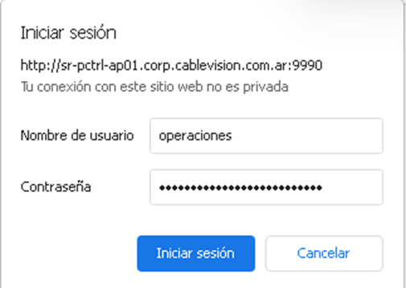
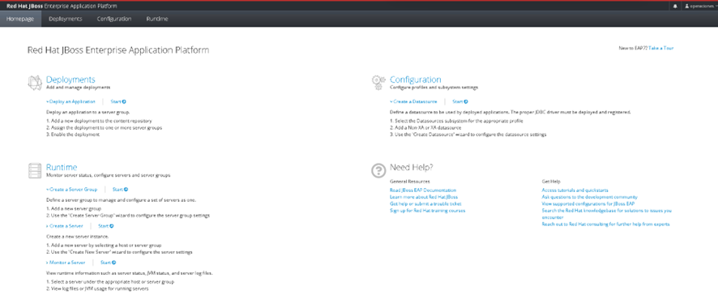
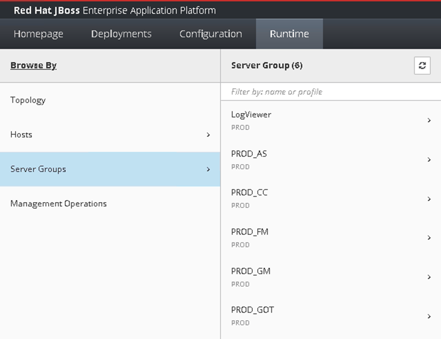
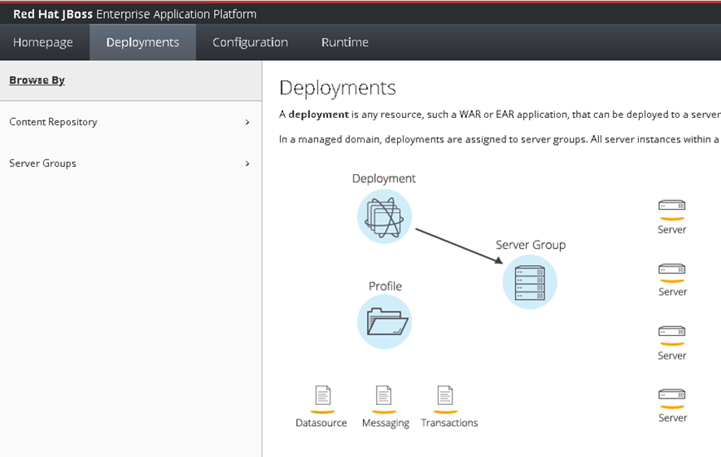
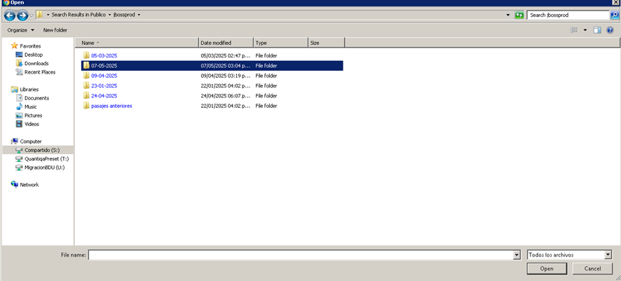

1. Acceso a la Consola JBoss
2. Panel principal
3. Ir a Runtime y seleccionar Server Groups
4. Detener el grupo de servidor correspondiente

5. Ir a la pestaña Deployments
6. Deshabilitar el WAR actual

7. Subir nuevo archivo WAR

8. Seleccionar el archivo WAR desde la carpeta

9. Confirmar archivo seleccionado y subir
10. Iniciar nuevamente el servidor

11. Rollback – Restaurar versión anterior del WAR
1. Detener el servidor (Runtime > Stop o Kill).
2. Ir a Deployments y deshabilitar el WAR actual.
3. Habilitar el WAR anterior (Enable).
4. Volver a Runtime y reiniciar el servidor.